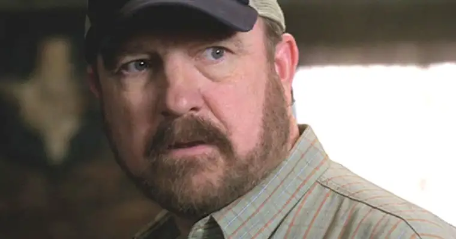
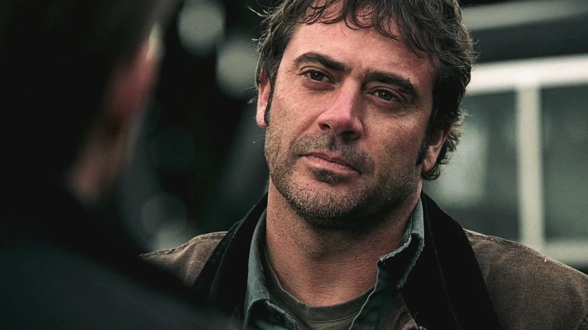
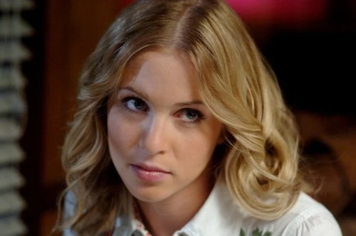

Robert Steven "Bobby" Singer (12 de agosto de 1950 - 2012) foi um caçador veterano, um velho amigo de John, e com o tempo evoluiu para uma figura paterna para os filhos de John, Sam e Dean. Ele também é um dos personagens recorrentes mais duradouros, além de Sam e Dean. Uma versão alternativa de Bobby existe em uma Terra apocalíptica, onde ele liderou a rebelião contra a ameaça de anjos e demônios. Atualmente, ele vive na Terra original.
John Eric Winchester (1954 - 19 de julho de 2006) era filho de Henry e Millie Winchester,[1] marido de Mary Winchester e pai de Dean e Sam Winchester[2] e Adam Milligan.[3] Em busca de vingança depois que sua esposa foi morta pelo demônio Azazel, John se tornou um caçador e criou seus dois filhos mais velhos para lutar contra o sobrenatural. Quando Dean tinha 26 anos e Sam tinha acabado de começar a faculdade de Direito, quando John desapareceu misteriosamente. O que fez com que Sam abandonasse a faculdade de direito e voltasse a caçar, com seu irmão mais velho, Dean, para encontrá-lo. Eventualmente, eles encontraram John, que procurava a arma Colt para matar demônios para matar Azazel,[4] mas os três foram pegos em um acidente de carro após um encontro brutal com o demônio.[5] Logo depois John fez um acordo com Azazel para trazer Dean de volta da morte e foi para o Inferno por isso,[6] mas eventualmente escapou quando o Portão do Diabo foi aberto e, como um espírito, ajudou Dean a finalmente matar Azazel antes de seguir em frente.[ 7] A alma de João chegou ao Céu, onde ele se reuniu com Maria após sua ressurreição e segunda morte, permitindo-lhes passar o resto da eternidade juntos.[8][9] Antes de se tornar um caçador, John era um veterano da Guerra do Vietnã (USMC) de Lawrence, Kansas, trabalhou como mecânico e acabou sendo coproprietário (com Mike Guenther) de uma garagem em Lawrence. John também serviu como um recipiente temporário para o Arcanjo Miguel e um recipiente temporário para o demônio Azazel na primeira aparição verdadeira do referido demônio na tela.
Mary Sandra Winchester (nascida Campbell) (5 de dezembro de 1954 - 2 de novembro de 1983; 2016 - 2019) era uma caçadora, filha de Samuel e Deanna Campbell, esposa de John Winchester e mãe de Dean e Sam Winchester. Depois de se aposentar da caça para ficar com sua família, Mary foi morta pelo Demônio Azazel exatamente seis meses após o nascimento de Sam, o que estimulou John a se tornar um caçador para matar Azazel como vingança e criar seus filhos como caçadores também. 33 anos depois, depois que Dean reuniu God and The Darkness, ela foi ressuscitada por este último como um presente para Dean. The Darkness mais tarde revelou que ela trouxe Mary de volta para ajudar Dean a ver que a verdadeira Mary é melhor do que o sonho de sua mãe que Dean manteve por tanto tempo na tentativa de fazer Dean aceitar sua vida e deixar de lado sua raiva. Após sua ressurreição, Maria lutou com o novo ambiente que mudou nas últimas três décadas, o que a levou a abandonar brevemente seus filhos. Ela se alinhou com os Homens de Letras Britânicos, que a ajudaram a aprimorar suas habilidades como caçadora e a se adaptar melhor ao novo mundo, embora a alienassem de seus filhos. Mary logo formou um relacionamento com Arthur Ketch, mas percebeu que ele e seus superiores tinham segundas intenções para outros caçadores. Ela tentou protestar, mas foi subjugada e colocada sob o controle deles, tornando-a um peão de seus caprichos. Com a ajuda de seu filho Dean, ela se libertou e ajudou seus colegas caçadores a derrotar os Homens de Letras Britânicos na América. Mary então voltou para seus filhos, embora logo tenha sido separada deles novamente após protegê-los de Lúcifer e foi enviada para uma realidade alternativa com ele. No outro mundo, Maria foi aprisionada pelo Arcanjo Miguel que governa aquele mundo e queria invadir o seu mundo. Maria é libertada das garras de Miguel pelo filho de Lúcifer, que foi enviado para aquele mundo enquanto tentava encontrá-la. Depois, Mary e Jack formariam uma resistência contra Michael. Nos meses que se seguiram, os dois tiveram muitas vitórias antes de se reunirem com Sam, Dean e Castiel, que viajaram pelo mundo para salvá-los. Mary não queria abandonar a luta, mas foi persuadida depois que prometeram evacuar também os civis. Após seu retorno ao Universo Principal, Mary continuou caçando, embora tenha começado a viver na cabana de Donna Hanscum com Bobby, em vez de no bunker. Depois que Jack sem alma mata Nick por tentar ressuscitar Lúcifer, ele acidentalmente mata Mary em um breve ataque de raiva. Maria se reencontra com seu marido no Céu e agora está em paz em um Céu compartilhado com João.
